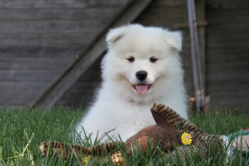

PET BREED FROM A PHOTO · 111 HELD OUT · 37 BREEDS

Thinking off: 6.5x cheaper
| thinking on (the top setup) | 83.8% | $0.94 / 1k |
| thinking off | 83.8% | $0.15 / 1k |
| thinking off, photo at 256 px | 86.5% | $0.15 / 1k |
Thinking wrote ~890 tokens per photo and changed 6 answers out of 111.
ACTION FROM A VIDEO CLIP · 8 FRAMES · 162 FRESH CLIPS

Keep thinking on
| 8 frames, thinking on (top) | 80.2% | $1.70 / 1k |
| thinking off | −13 to −16 pts | cheaper |
| 4 frames, thinking on | −7.4 pts | cheaper |
Jogging vs running, clapping vs waving: you have to compare frames, and that takes thinking.